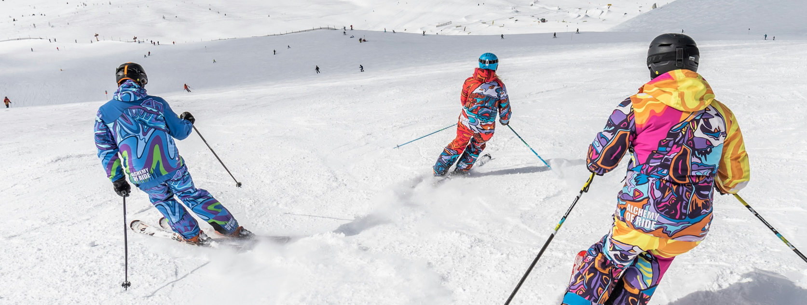
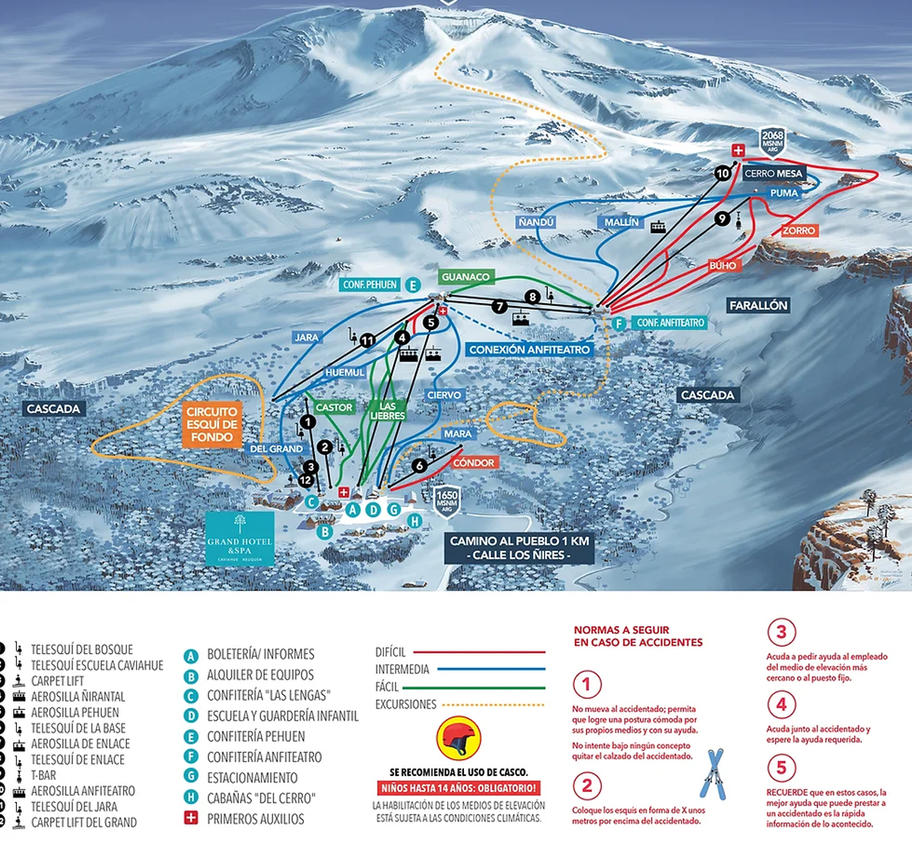

Información
Conocenos
¿Quiénes somos?
Caviahue Ski Resort es mucho más que un destino invernal. Situado en la majestuosa región de la Patagonia Argentina, este paraíso natural ofrece una variedad de actividades emocionantes durante todo el año.
Nuestras pistas
NOTA: «Aerosilla cuádruple Ñirantal» se encuentro en proceso de obra e instalación. Fecha de finalización de obra e inaguración a confirmar.
Ubicacion
Para llegar a Caviahue desde la capital de Neuquén se deben recorrer 352 kms., y 1570 kilómetros desde la ciudad de Buenos Aires, por las rutas pavimentadas nacional 22 y provinciales 21. El último tramo corresponde a la Ruta Prov. 26 y después de 52 kms. se arriba a Caviahue, puerta de entrada al Parque Provincial Copahue - Caviahue, pasando por uno de los lugares más espectaculares de la provincia tal como Riscos Bayos y el Cajón del Hualcupén. Antes de irte, ya vas a estar pensando en volver.
Rutas aéreas
-
BUENOS AIRES (BUE) A NEQUÉN (NQN)
6 vuelos diarios Aerolíneas Argentinas (vacaciones de invierno) BUE-NQN directo.1 vuelo con escala (4 hs. por cambio de avión vía Córdoba). BUE-COR-NQN.
-
CÓRDOBA (COR) A NEUQUÉN (NQN)
1 vuelo diario directo/ 6 vuelos diarios con escala en BUE
-
MENDOZA (MDZ) A NEUQUÉN (NQN)
1 vuelo diario directo/ 6 vuelos diarios con escala en BUE
-
SALTA (SLA)-CÓRDOBA (COR)-NEUQUÉN (NQ)
1 vuelo los sábados -ida y vuelta- con escala (50 minutos por cambio de avión vía Córdoba).
Omnibus
-
EN ÓMNIBUS (Neuquén - Caviahue)
Desde al aeropuerto de Neuquén, podés llegar a Caviahue en micros de línea. Los traslados parten de la terminal de micros de Neuquén o desde Zapala en varios horarios. Los omnibus salen desde la terminal de micros de la ciudad de Neuquén a la que llegás en taxi (20 minutos aproximadamente) desde el Aeropuerto.
-
EN ÓMNIBUS (Buenos Aires - Neuquén - Caviahue)
Las empresas VÍA BARILOCHE, FLECHA BUS, CRUCERO DEL NORTE, CHEVALLIER y ANDESMAR, llegan hasta Neuquén o hasta Zapala (180 km de Caviahue). Desde Neuquén Capital o desde Zapala, se debe hacer trasbordo a los micros de la empresa Cono Sur, para trasladarte a Caviahue.
-
Venta de pasajes a Caviahue: Agencia Caviahue Tours Tel: (02948) 495138
En Auto
-
Ubicado a 1.550 km de la Ciudad de Buenos Aires, el camino en automóvil, sigue las siguientes rutas: RN7 (Acc. Oeste), RN5 hasta Santa Ros -La Pampa-. Luego, tomar la RN35, RN152, RN143, la rutas Provinciales RP20, RN151. Y un último tramo, desde Neuquén por la ruta Nacional 22 y las Rutas Provinciales 21 y 26 hasta Caviahue. El tiempo estimado de viaje es de más de 24 horas, por eso se recomienda hacer una parada para cenar y dormir en General Acha, La Pampa o en Neuquén Capital. Los teléfonos de Vialidad y control de rutas son: 02948-495068. Y recuerde llevar cadenas para utilizarlas en caso de nevadas o rutas heladas.
En Avion Privado
-
Existen vuelos privados desde Buenos Aires a Loncopué (ciudad cercana a Caviahue) su contratación incluye los siguientes beneficios: Itinerarios planificados de acuerdo a las necesidades del cliente: fecha y horario que el pasajero necesite. Atención y asistencia VIP durante todo el viaje: el pasajero no tendrá que realizar esperas, filas, ni demoras. (A excepción de condiciones climáticas). Catering VIP a bordo. Consultas: www.southjets.com